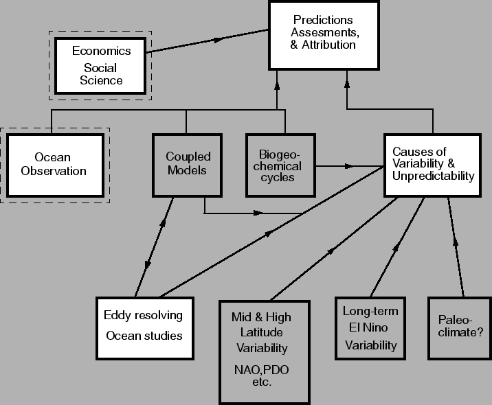

April 17, 2000
There has been much discussion of late about possible ways to expand GFDL (and the atmospheric and oceanic sciences in Princeton), about possible ways to have more ties with the university, and about possible ways to increase our flexibility and gain access to new sources of money. All of these should be done without at the same time weakening GFDL's traditional commitment to difficult, long-term problems and the science underlying such problems.
One avenue that addresses these issues is the possibility of obtaining a significant amount of funding from NSF via a so-called `Science and Technology Center' (STC), for which NSF recently announced a competition. The funding for STCs is between $1.5 and $4 million per year for five years, renewable for another five. According to NSF guidelines, STCs should be centered in a university, have connections with National Laboratories and industry, be interdisciplinary and multi-institutional. The idea is co-ordinated basic research, with a grand theme of undisputed importance. NOAA has also expressed interest in funding a joint PU/GFDL center; NOAA funding might be indefinite, rather than for the lifetime of a particular proposal, but NOAA's particular interests require that the center be seen to have a `product.' The following discussion document outlines an idea for a `Princeton Climate Center' that would appeal to NSF and NOAA and would address some of the fundamental, difficult and interesting issues in climate today.
We propose a center in climate prediction and assessment at time-scales longer than the seasonal-interannual, moving upward to the centennial scale at which anthropogenic GHG gas forcing is dominant. (For convenience, we call the various scales the SI, the decadal, and the centennial.) The goal, simply put, is to determine what can be predicted at timescales longer that the SI, and, ultimately, to predict that which can be predicted. The overarching scientific problem is to understand the interplay of natural variability with global warming. (The use of the word `prediction' should be treated with caution, since `predictability' in the usual sense as an initial value problem may be absent at such long timescales; we include `projections' or `assesments' and similar in our goals. Think of `experimental prediction,' not operational forecasts.)
There are (at least) two reasons why climate may be unpredictable: imperfect models, and natural variability and unpredictability in the sytem itself. The proposed center would address these problems by the combined use of observations and models. The modelling program would be centered at GFDL/PU, and would draw on ocean observations using floats, altimeter data and XBTs managed elsewhere.
The ultimate goal would be to produce climate predictions and/or projections for the time-scales for which such things are possible. A great deal of basic research would provide the foundation for the center, to understand the causes of natural variability and unpredictability on these timescales. The center would interact with and adjoin the climate, ocean, and experimental prediction groups at GFDL, as well as the Carbon Modelling Consortium (CMC) at PU, and might lead to an expansion of some or all of these groups. There may be an observational program attached to the center, centered at another institution (e.g., Woods Hole, AOML). The following few subsections briefly describe various aspects that might be included in such a center (see also fig. 1).
To use such data in an ocean/climate model requires an ocean data assimilation scheme. This aspect of the proposal is consistent with efforts to begin such an effort at GFDL, and provides a natural context for that activity.
The scientific difficulty in predicting climate is that it is a chaotic initial-boundary value problem, with uncertain forcing. One might define three timescales:
Another aspect of the prediction problem lies in the uncertainty of parameters and parameterizations. To investigate this we may produce ensembles of climate predictions by way of varying uncertain physical parameters. What is the optimum way to do this? Can we improve on brute-force methods by way of a more intelligent variation of parameters?
One aspect of the research must, then, be to use state-of-the-art coupled atmosphere-ocean-land models, with a carbon cycle model as appropriate, to provide ensemble forecasts with an ensemble of initial conditions and parameters, including initial conditions defined as well as possible by observations. The associated research will involve defining the appropriate initial conditions and parameters for the ensembles (e.g., varying the ocean initial conditions in sensible ways), analysing the results, attributing causes, and producing, as appropriate, predictions and or projections -- `projections' because both unpredictability and model imperfection limit predictability in the narrow sense. This path in turn leads us in a natural way to the so-called `detection and attribution' problem that attempts to associate causes with observed or predicted effects. The connection between primarily statistical `fingerprinting' techniques with the dynamics of variability and change will be important in this effort.
One cannot simply run a coupled model, or even an ensemble of coupled models, and expect that an algorithmic analysis of the results will lead to meaningful climate predictions and insight into climate predictability. Research into the causes of such variability, and potential predictability of the system, is plainly essential. The bottom few boxes in figure 1 indicate some of the basic-research activities that might go on in such a center (each box could itself easily form a research center).
Among the many possible topics, research on the influence of the oceanic mid-latitudes on equatorial regions (and hence decadal ENSO variability), on possible modes of long-term variability in the ocean and atmosphere system (as both independent and coupled systems), and research into the modes of variability of eddying ocean simulations may be especially relevant. Similarly, research into the predictability of the ocean itself, and the atmospheric response to potentially small changes in ocean conditions, must play a role. How does the ocean respond to global warming, and does it `sequester' heat in any meaningful way? The problem is not so much in realizing that basic research will be necessary, but in deciding what aspects of such research connect most directly to our goals.
The above is all consistent with the GFDL `White Paper,' to wit: `The simulation and understanding of natural variability on multi-decadal scales intersects the issue of human induced climate change in a host of ways. It raises the question of whether predictions of a decade or two in advance can be improved by initializing and predicting the evolution of natural variability on these time-scales..... Our goal .... should be the creation of a seamless prediction/assessment capability connecting the SI time scale to both natural and anthropogenic changes on longer time scales.'
Perhaps as a metaphor for GFDL, there are a host of interesting basic problems that if harnessed appropriately can contribute to problems of broader interest to society as a whole. Our focus here is on `predictability and variability' in a broad sense. For a proposal to either (or both) NSF and NOAA we may still need both to define the problem better, and to further focus our approach.
Your input is solicited on all aspects of this effort.
|
 |